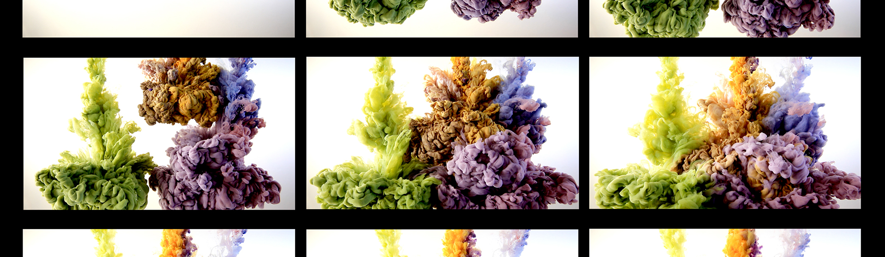

Various
Palais de Seoul
2017. 09. 03 - 2017. 12. 01

Palais de Seoul
2017. 09. 03 - 2017. 12. 01
강명규의 드로잉은 신비롭다. 집과 계단, 나무가 뒤죽박죽 된 풍경이 하나의 생명체와 같이 유기적으로 연결되어 있다. 자연의 모티브를 이용한 만다라와 같은 드로잉, 복잡하게 얽혀 있는 생명의 실타래와 같은 드로잉도 있다. 더욱 시선을 끄는 것은, 물 속에 물감이 퍼져 나가는 것을 느리게 재생되도록 한 영상과 사진, ‘천천히 보아야 아름답다’이다. 작가는 “주변을 가만히 들여다 보면 놀라운 것 투성이다”하고 한다. 소소한 것에서 모티브를 찾아 섬세하게 기록하는 작품들이다. 강명규의 ‘행복해야 할 권리’전은 맑은 색채로 옮긴 일상에서 마주할 수 있는 작은 것에 대한 감성과 마주할 수 있을 것이다.
PHOTO
